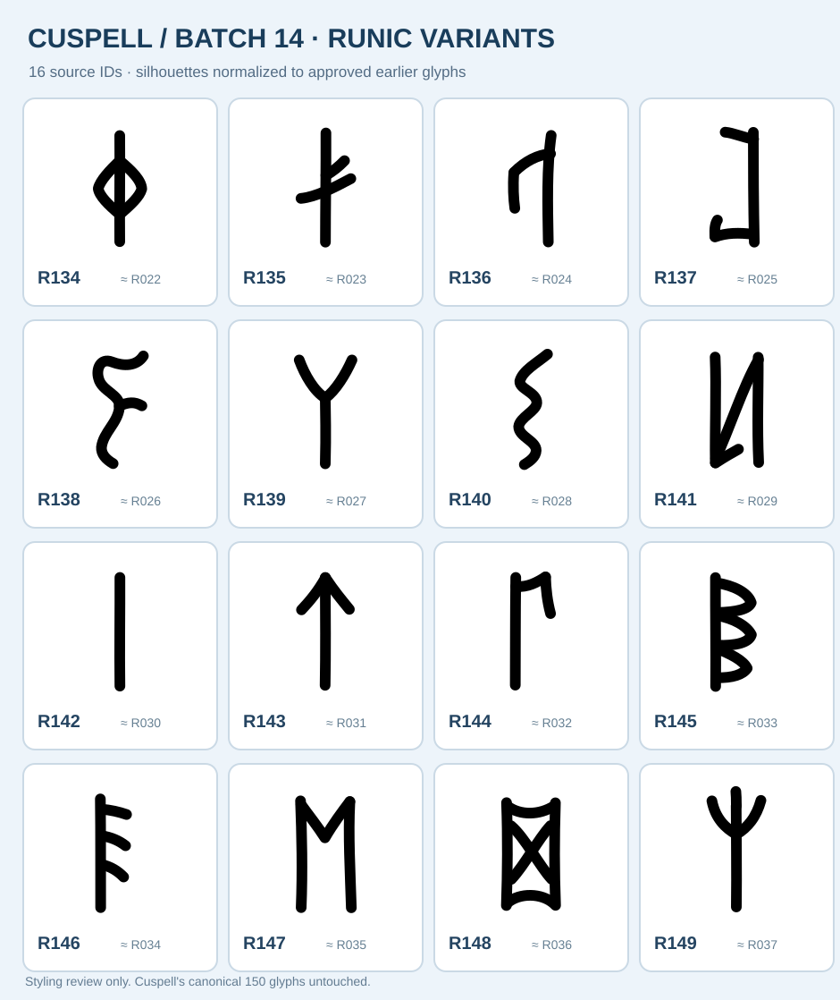
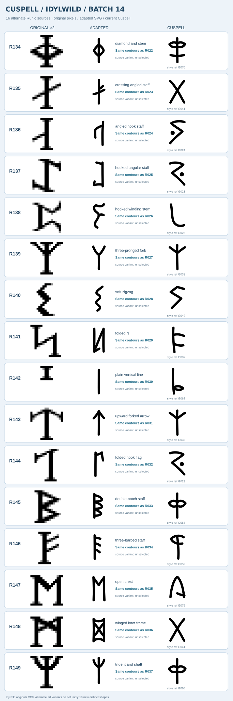

16 Runic source variants matching R022–R037
Each source retains its own SVG and source ID. Matching earlier approved geometry is reused to prevent false distinctness. No canonical adoption or root assignment.

